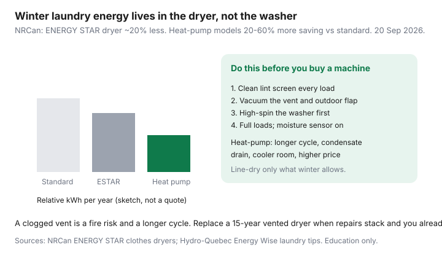

Utilities · Canada
Clothes Dryers and Canadian Energy Bills: Vents, Heat-Pump Dryers, and Line-Drying Reality
In July you can hang a load on a rack and call it virtue. In a Canadian January the indoor line humidifies a tight condo, the balcony line freezes, and the electric dryer becomes one of the largest appliances on the meter. The bill does not print “dryer.” It prints kWh. This guide makes that line visible.
Pair it with cold-water wash. The washer save is real and usually smaller. If hydro is heat, the dryer still matters — it is not a baseboard, but it is not a phone charger either.
Disclosure: Energy monitors are an offer type that can show a dryer’s kWh per load. Saving Optimizer may earn a commission if we later add partner links. We do not currently claim appliance-brand or utility partnerships. This is education — not a product endorsement.
Key takeaways
- NRCan EnerGuide examples put a standard dryer near 928 kWh/year — often more than the washer and the lighting upgrade combined.
- ENERGY STAR dryers use about 20% less energy than a standard model. Heat-pump dryers can save an extra 20–60% versus standard (NRCan, used 20 Sep 2026).
- A clogged vent is a fire risk and a longer cycle. Clean the lint screen every load and the duct on a calendar.
- Canadian winter line-drying is a rack for smalls, not a substitute for a family dryer. Condo rules may ban balcony lines anyway.
- High-spin the washer, fill the drum without packing, and use the moisture sensor. Replace a 15-year vented unit when repairs stack and you already did those habits.
Why dryers dominate laundry energy in winter
A conventional electric dryer is a heater and a fan. You are boiling water out of cotton at 240 V. NRCan’s circulated EnerGuide table puts a standard dryer on the order of 928 kWh/year. A family that runs a load a day in a polar-vortex month will beat that annual average in a quarter. Gas dryers move the commodity to m³; they still need a clean vent and they still cost money.
Ontario TOU: a 4 kWh load at 20.3 ¢ on-peak is about 81 ¢ of energy before delivery; the same load at 9.8 ¢ off-peak is about 39 ¢. The clock is a lever. Heat-pump dryers and a clean vent are larger ones if you dry every day.

Vent cleaning as free efficiency and fire safety
- Lint screen: every load, washed with soap occasionally so the mesh breathes.
- Flexible duct: pull the dryer out twice a year and vacuum the stub. Crush-proof rigid or semi-rigid beats foil accordion.
- Outdoor flap: it should close and not be a lint beard. Birds nest in them.
- Long runs and vinyl through a joist are how clothes take 90 minutes and the cabinet gets hot. That is a fire-safety conversation, not a “eco mode” conversation.
If the dryer is hot and the clothes are still wet, stop using it until the vent is clear. A $0 brush kit beats a $1,400 machine you will still vent into a sock.
Heat-pump dryers: savings vs price and install constraints
NRCan (used 20 Sep 2026): ENERGY STAR dryers use about 20% less energy than standard. Heat-pump models recycle heat and can save an additional 20–60% versus standard; they meet ENERGY STAR Most Efficient. They also:
- Take longer per load. Plan the evening accordingly.
- Need a condensate drain or a tray you will empty. They are often ventless — useful in condos that cannot punch a new 4-inch hole.
- Cost more at the till. Payback is a high-use, high-¢ household, not a couple who dry twice a week.
- Prefer a space that is not a 5°C garage. They steal room heat, like a small heat-pump water heater.
A plug-in energy monitor on a 120 V compact unit can show kWh/load. Most full-size 240 V dryers need a clamp meter or the utility’s interval data, not a $30 socket.
Apartment line-drying and condo rules
A folding rack for synthetics and socks is free efficiency. A permanent ceiling laundry in a small bedroom is how you grow mould. Balcony lines are banned in many condo declarations and look like a flag in a January wind anyway. Read the rules before you drill. Shared-card dryers: pull at “dry enough,” do not buy the extra 10 minutes for a hoodie that can hang overnight.
Washer spin speed and load size effects
Water you spin out is water you do not bake out. Use high-spin or extra spin on towels and jeans. Do not wrap a soaking comforter around the sensor. Do not underfill a conventional dryer (it tumbles poorly) or cram it (same). Moisture-sensor cycles beat a 70-minute timed bake. NRCan’s washer page is explicit: faster spin is dryer energy you do not buy.
When replacing an ancient dryer beats waiting
Replace when the drum bearings howl, the element is on its second repair, the vent run is already fixed, and you dry four-plus loads a week at a non-trivial ¢. A 15-year vented unit with a dead sensor is a kWh factory. If you dry twice a week and the vent is clean, a $1,400 heat-pump dryer is a lifestyle purchase. Tenants: buy a rack and the shortest card cycle; do not buy a machine for a landlord’s 240 V outlet unless the lease and the move-out plan are clear.
Sources & date stamps
- NRCan, ENERGY STAR clothes dryers — about 20% less than standard; heat-pump models save an additional 20–60%; Most Efficient note (used 20 Sep 2026).
- NRCan, Choosing and Using Appliances with EnerGuide — example standard dryer ~928 kWh/year.
- NRCan, ENERGY STAR clothes washers — high spin reduces dryer energy.
- Hydro-Québec Energy Wise laundry context; OEB TOU 9.8 / 20.3 ¢ from 1 Nov 2025 for the clock sketch.
Frequently asked questions
How much electricity does a dryer use in Canada?
A conventional electric load is often a few kWh. NRCan’s EnerGuide example for a standard dryer is on the order of 928 kWh/year. Your winter will differ. An energy monitor or interval data beats a forum number.
Are heat-pump dryers worth it?
NRCan: they can save an extra 20–60% versus a standard dryer, on top of ENERGY STAR’s ~20%. Worth it if you dry often, pay a real ¢, and can live with a longer cycle and a condensate drain.
Is a dirty vent really a bill issue?
Yes. Restricted airflow stretches the cycle and overheats the cabinet. It is also a fire risk. Clean the screen every load and the duct on a calendar.
Can I just line-dry in winter?
Smalls on an indoor rack, yes. A family’s worth of cotton in a one-bedroom, no — you will humidify the suite. Balconies freeze and may violate condo rules.
Does a faster washer spin really help?
Yes. NRCan calls out high spin as dryer energy you do not buy. Extra rinse water you did not need works against you.